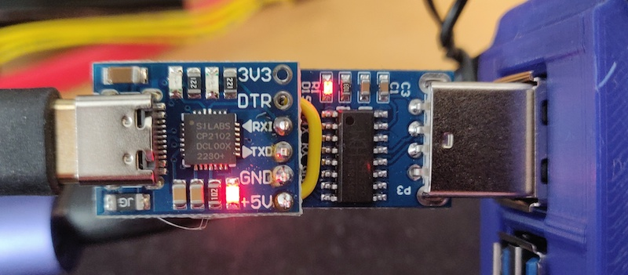

CH9329 User Guide
The CH9329 is a UART-to-USB-HID bridge chip. It presents itself on the target PC as a composite USB keyboard and mouse device, and receives framed commands over a TTL UART from the host controller (kvm-serial). It is the simpler of the two supported bridge chips: no pairing handshake or dipswitch configuration is needed, and no special flags are required in kvm-serial. CH9329 is the default protocol.
Protocol reference: CH9329 Protocol Specification
Supported devices overview: Supported Devices
Hardware
What you need
- A CH9329 module or cable (UART-to-USB-HID)
- A USB-to-UART adapter to connect the CH9329 to your host computer, unless using a pre-assembled all-in-one cable
- A USB video capture card (optional, for video feed from the remote machine)
Pre-assembled cables and modules
Pre-assembled CH9329 cables are sold on eBay and AliExpress. Search for "CH9329 cable usb".
There are two common form factors:
| Form factor | Description |
|---|---|
| Cable | USB-A at both ends. One end connects to the host (serial), the other to the target (USB HID). Plug-and-play — no soldering required. Make sure it has the CH9329 chip label; a plain USB-A to USB-A cable has no serial conversion and will not work. |
| Module | A small breakout board with serial header pins. Requires a separate USB-to-UART adapter (CP2102, CH340, FTDI, etc.) wired to the host computer. |
Note: the author has no affiliation with any manufacturer or seller.
DIY wiring

A home-made serial KVM module: CH9329 chip soldered to a SILabs CP2102 USB-to-UART adapter. CH340 works too.
Note: this photo shows the 5 V pins connected — see the warning below before replicating this wiring.
You can build your own module by wiring a CH9329 chip to a USB-to-UART adapter:
Host PC (USB) ──► USB-to-UART adapter (e.g. CP2102 / CH340)
│
│ TX ──► RX ┐
│ RX ◄── TX ├─ CH9329 module
│ GND ─── GND ┘
│
▼
USB-A (target PC)
The CH9329 operates at 3.3 V or 5 V TTL. Default baud rate is 9600 bps; the chip also supports 1200, 2400, 4800, 14400, 19200, 38400, 57600, and 115200 bps (note: 115200 is not supported at 3.3 V). For most uses, keep the default 9600 bps.
⚠ Warning — do not connect the 5 V power pins together.
The CH9329 module is already powered by the target machine's USB port. If you also connect the 5 V output of the USB-to-UART adapter to the CH9329's VCC pin (as per the image above), you create two power sources driving the same rail. This can backfeed voltage into one or both USB ports, which may damage hardware that lacks modern reverse-power protection. Wire only TX, RX, and GND between the adapter and the CH9329; leave the 5 V / VCC pins unconnected.
Physical Setup
- Connect the CH9329 module/cable to the target machine via USB.
- Connect the serial end (or USB-to-UART adapter) to your host machine via USB.
- Verify the device appears as a serial port on the host:
- macOS/Linux:
/dev/cu.usbserial-XXXXor/dev/ttyUSB0 - Windows:
COM3,COM4, etc. (check Device Manager → Ports) - On the target machine, the CH9329 should enumerate as a USB keyboard + mouse. No drivers are needed on the target side.
Driver installation: If the serial port does not appear on your host, you may need to install a USB-to-UART driver. See INSTALLATION.md for platform-specific instructions.
GUI Usage
No special configuration is needed for CH9329 — it is the default protocol.
- Launch the GUI (
python -m kvm_serialor the packaged executable). - Open File → Connect (or the connection toolbar).
- Select your serial port from the drop-down list and click Connect.
- If using a video capture card, select the camera under Options → Camera.
- The app will begin forwarding your keyboard and mouse input to the remote machine.
The GUI detects CH9329 automatically; no additional menu options are required.
Headless / CLI Usage
Use kvm_serial.control for terminal-based usage without a GUI (e.g. Raspberry Pi to Pi, or
headless servers):
# Basic keyboard forwarding only (default mode)
python -m kvm_serial.control /dev/cu.usbserial-A6023LNH
# With mouse capture enabled
python -m kvm_serial.control --mouse /dev/cu.usbserial-A6023LNH
# With video, use the GUI: python -m kvm_serial
# Windows COM port
python -m kvm_serial.control COM3
# Verbose logging
python -m kvm_serial.control --verbose /dev/cu.usbserial-A6023LNH
# Using uv
uv run kvm-control /dev/cu.usbserial-A6023LNH
CH9329 is the default protocol; no --ch9350 flag is needed. Run with --help to see all options.
Keyboard capture modes
By default, curses mode is used for keyboard-only, and pynput when mouse or video is enabled.
Other modes can be selected with --mode:
python -m kvm_serial.control --mode tty /dev/cu.usbserial-A6023LNH
python -m kvm_serial.control --mode usb /dev/cu.usbserial-A6023LNH # requires root
See MODES.md for a full comparison of capture modes and their trade-offs.
Troubleshooting
Serial port not detected
- Check that the USB-to-UART driver is installed. See INSTALLATION.md.
- On Linux, your user may need serial port access:
sudo usermod -a -G dialout $USER(then log out and back in). - On macOS, run
ls /dev/cu.*to list available serial ports after connecting the device.
No keyboard/mouse response on the target
- Ensure the USB end of the CH9329 is connected to the target machine and a USB HID device
has enumerated (check the target's device manager or
lsusb). - Double-check you have not connected the USB-A ends the wrong way around (target ↔ host reversed).
- Try a different USB port or cable.
- Check baud rate: kvm-serial defaults to 9600 bps which matches the CH9329 factory default.
If the chip has been reconfigured to a different baud rate, pass
--baud <rate>.
Keyboard input not captured on the host
- On macOS, pynput requires Input Monitoring permission (System Settings → Privacy & Security).
- Try
--mode cursesor--mode ttyas alternatives that do not require this permission.
Mouse coordinates appear wrong
- CH9329 uses a 12-bit absolute coordinate space (0–4095 × 0–4095).
- kvm-serial maps screen/scene coordinates to this range automatically in the GUI.
- In headless mode, absolute mouse is sent when
--mouseis active.
Further Reading
- CH9329 Protocol Specification — full frame format, command reference, and worked examples
- MODES.md — keyboard capture mode comparison
- INSTALLATION.md — platform-specific driver and permission setup
- SUPPORTED_DEVICES.md — comparison of CH9329 and CH9350L